Feature Correlations
Identify redundant and highly correlated feature pairs
Correlation Heatmap
Chart 1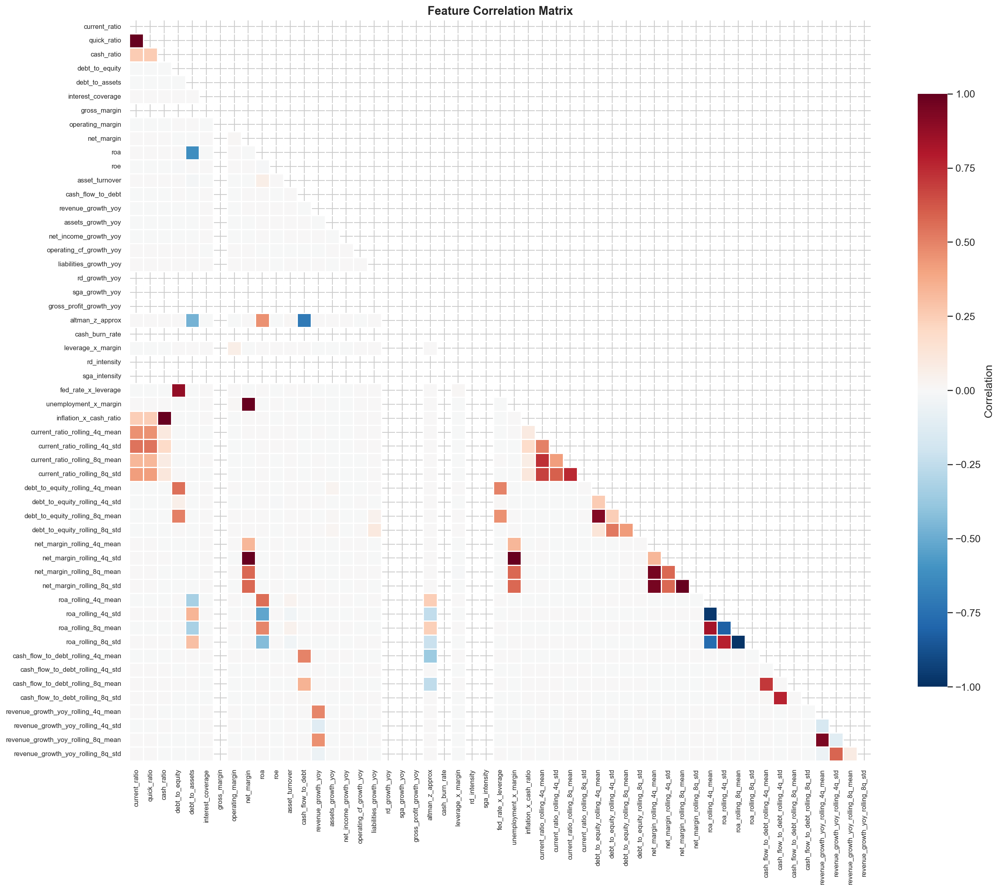
Full correlation matrix of all engineered features. Blue = negative, Red = positive. Use to identify multicollinearity and feature reduction candidates.
Top 20 Most Correlated Feature Pairs
Chart 2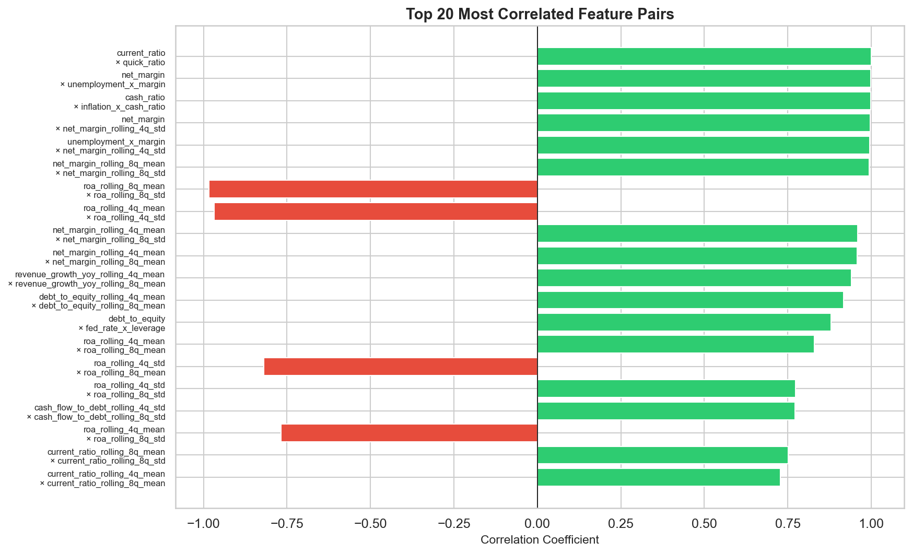
The 20 feature pairs with strongest absolute correlation. Green = positive, Red = negative. High |ρ| > 0.9 pairs are candidates for removal.
Feature Distributions
Shape, spread, and outliers of each engineered feature
Feature Distribution Grid (Histogram + KDE)
Chart 3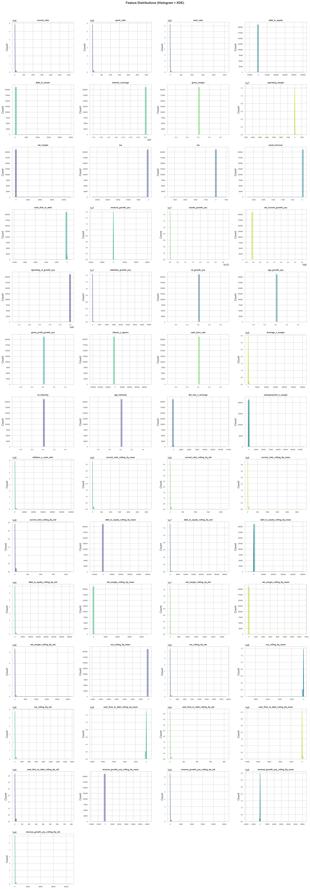
Histogram with kernel density estimate for every engineered feature. Look for skewness, bimodality, and heavy tails that may require transformation.
Financial Ratios by Category
Chart 4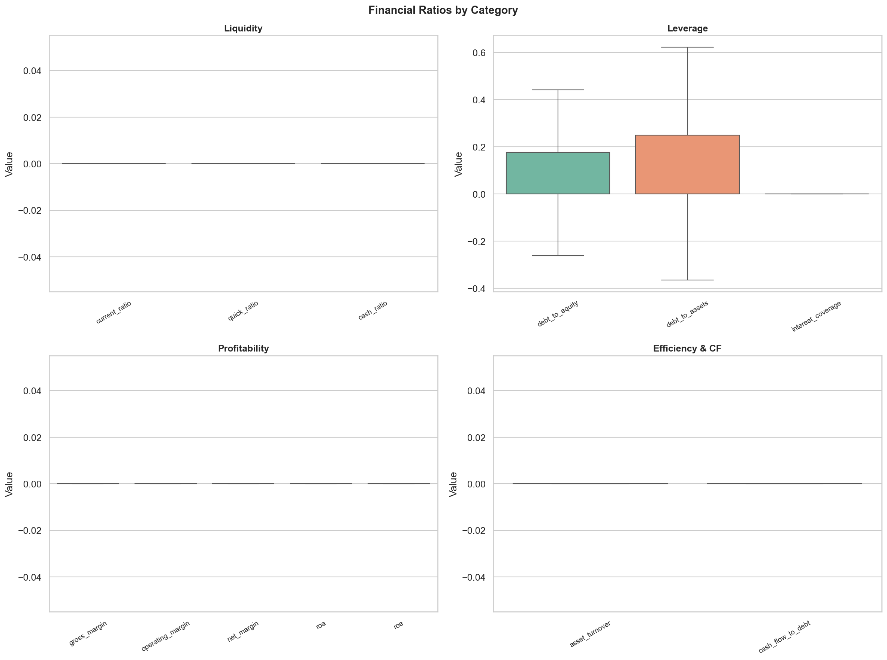
Box plots grouped by Liquidity, Leverage, Profitability, and Efficiency. Outlier whiskers excluded for clarity.
Pairplot — Top 6 Features by Variance
Chart 5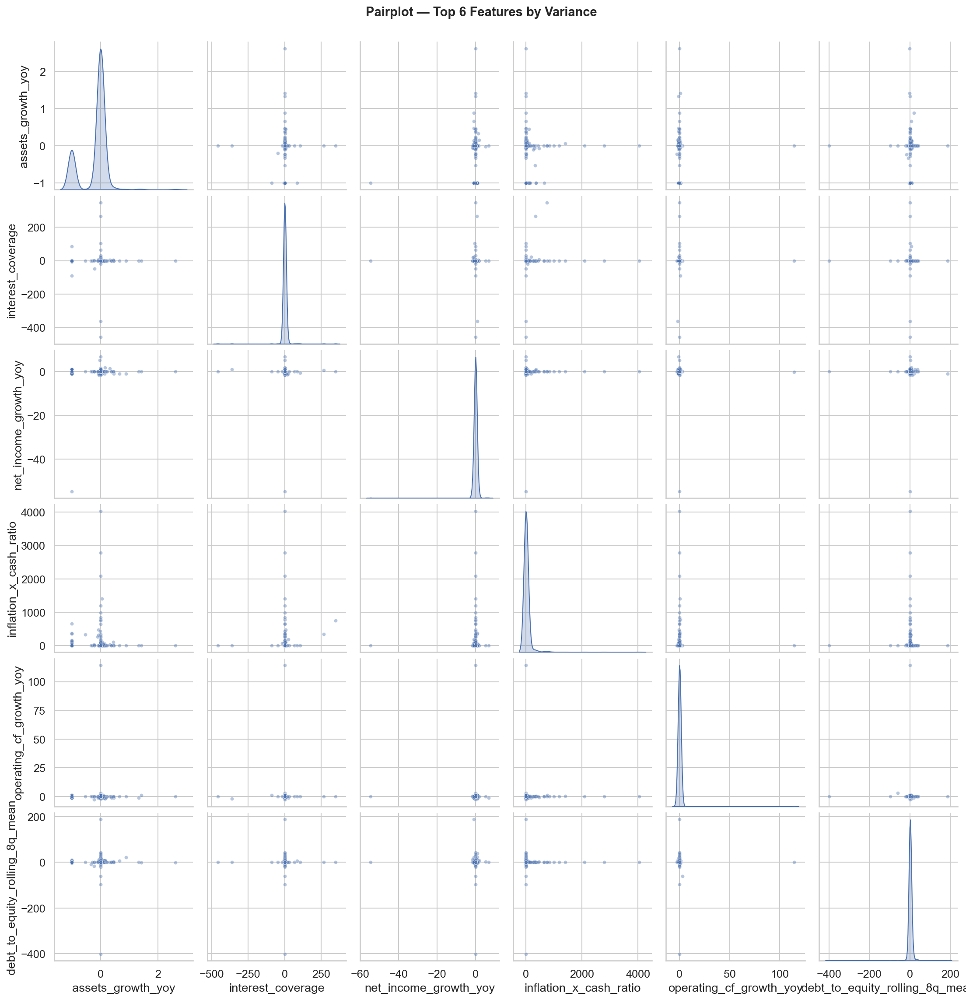
Scatter matrix of the 6 highest-variance features. Diagonal shows KDE, off-diagonal shows pairwise scatter.
Missing Data Analysis
Pre-imputation null patterns and column-level missingness rates
Missing Data Pattern (Pre-Imputation)
Chart 6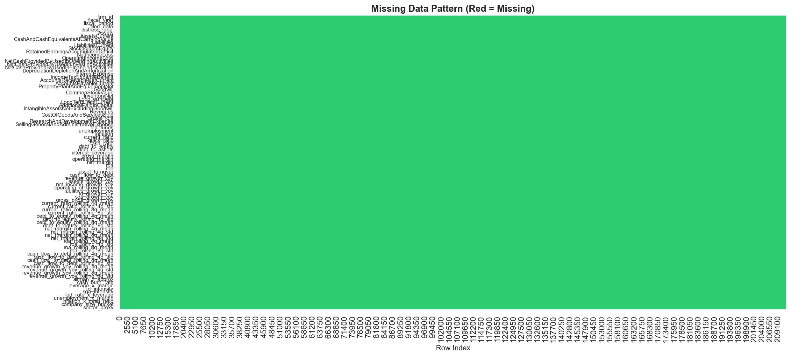
Red = missing, Green = present. Reveals structural missingness patterns — e.g., macro columns sharing the same null rows.
Missing Data by Column
Chart 7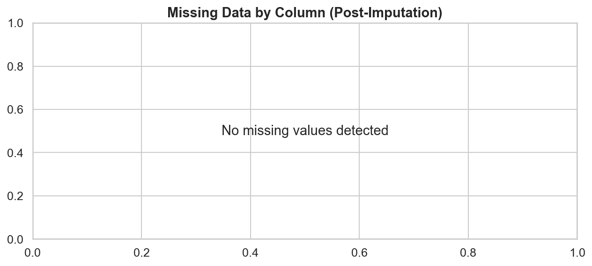
Per-column null percentage. Red = >50%, Orange = 10-50%, Blue = <10%. The 65.8% null in macro columns is handled via forward-fill.
Bias Analysis
Feature distributions across company size, sector, time period, and macro regime
Sample Distribution Across Slices
Chart 8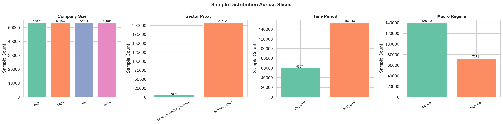
Sample sizes per slice across all 4 bias dimensions. Imbalanced slices can cause biased model performance.
Features by Company Size (KDE)
Chart 9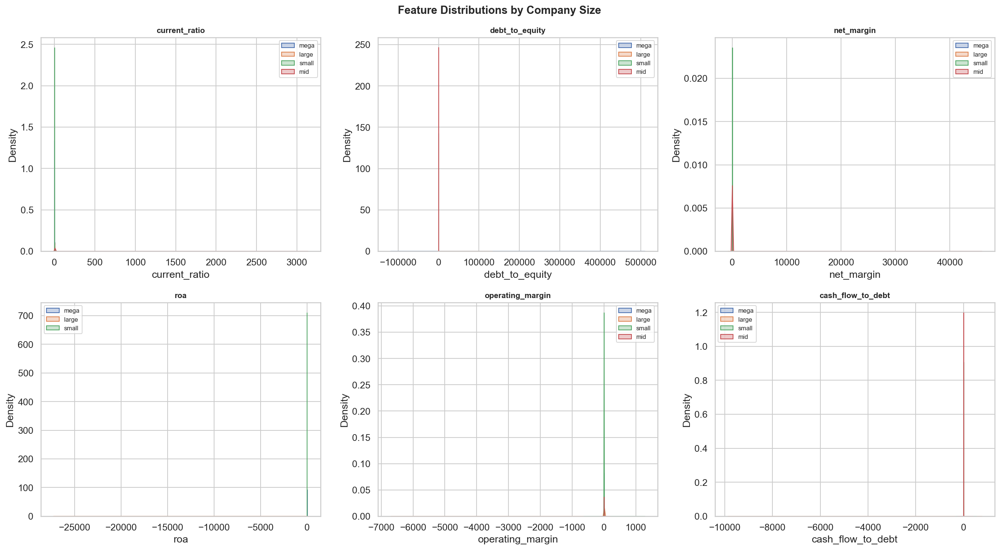
Overlaid density plots split by company size bucket. Significant separation indicates size-dependent feature behavior.
Features by Time Period (Violin)
Chart 10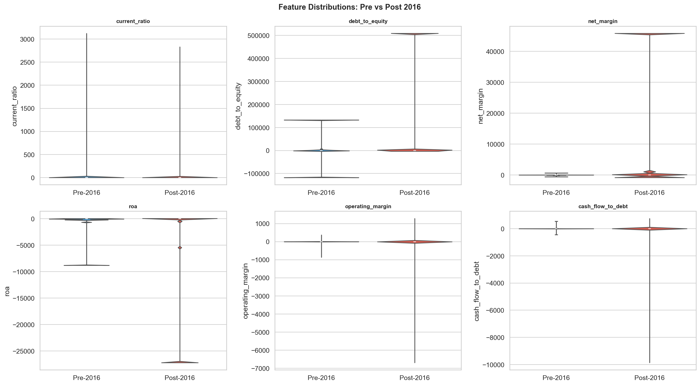
Pre-2016 vs Post-2016 comparison. Temporal stability means the model is less likely to suffer from concept drift.
Features by Sector Proxy (Box)
Chart 11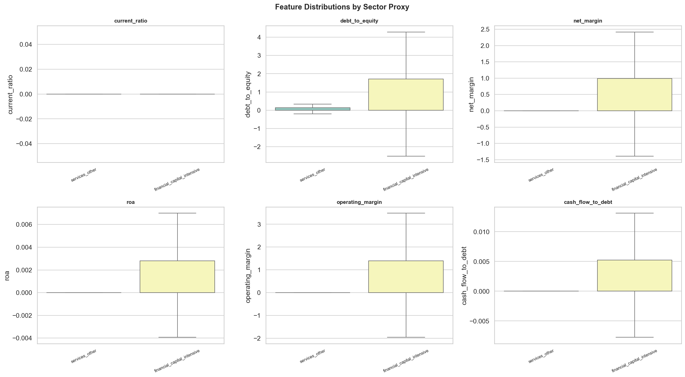
Box plots per inferred sector. Different sectors have fundamentally different financial profiles.
Macro Regime Comparison (KDE)
Chart 12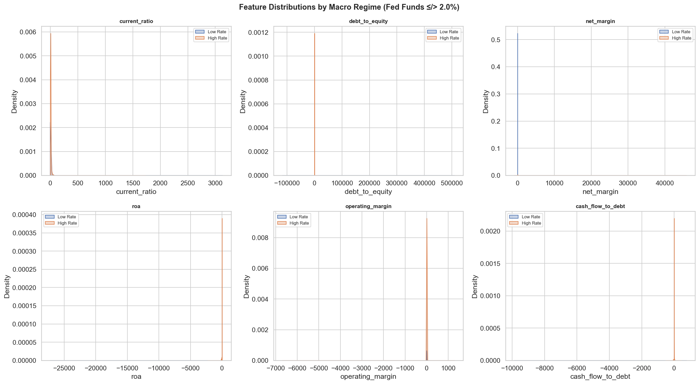
High vs Low federal funds rate regime. Overlapping distributions indicate feature robustness to rate environments.
Population Stability Index (PSI) Heatmap
Chart 13
PSI measures distributional shift. PSI < 0.10 = stable, 0.10–0.25 = moderate, > 0.25 = significant shift.
Outlier Concentration by Slice
Chart 14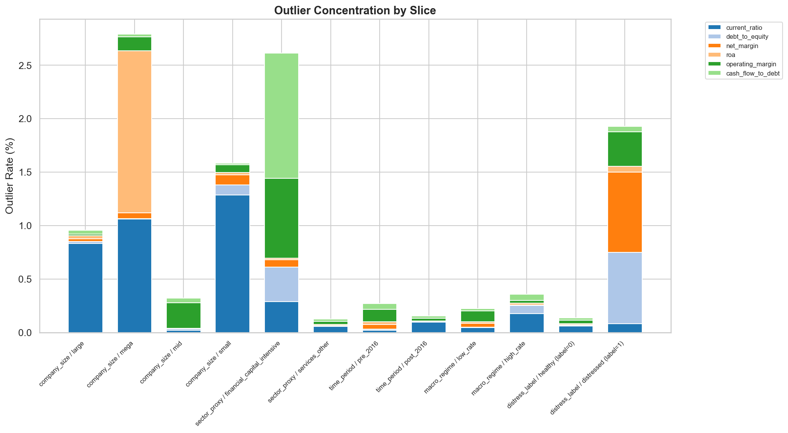
Fraction of each slice's data that are outliers (beyond ±3σ). Concentrated outliers in one slice can bias training.
Missing Rate by Slice
Chart 15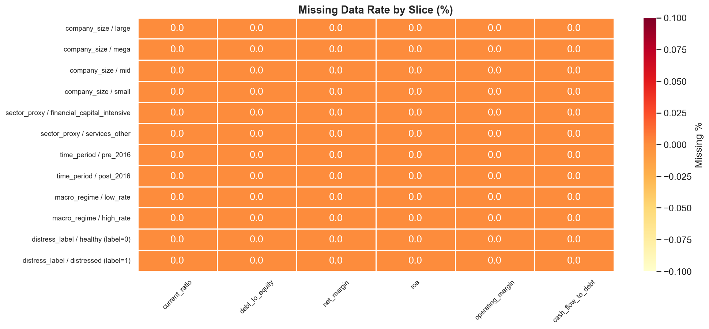
Per-feature missing data rates across bias slices. Non-uniform missingness could introduce systematic bias.
Feature Means: Healthy vs Distressed
Chart 16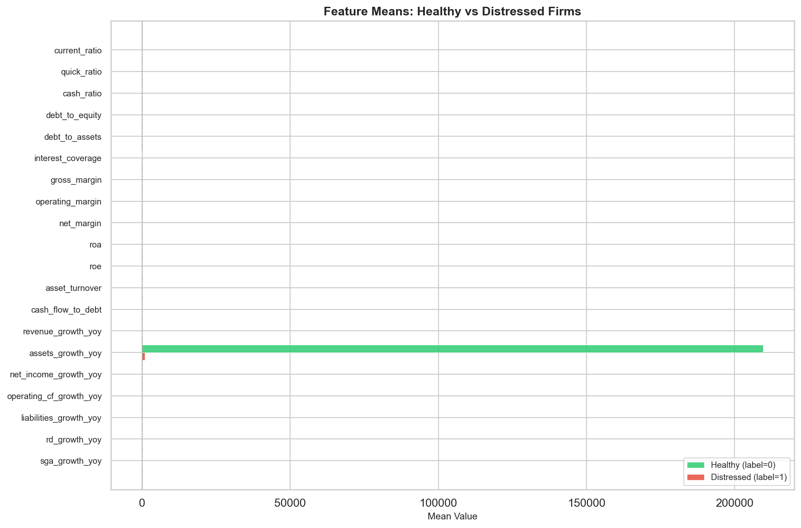
Compares average feature values between non-distressed (green) and distressed (red) firms. Large differences indicate strong predictive signals or potential leakage.
Distress Rate by Slice
Chart 17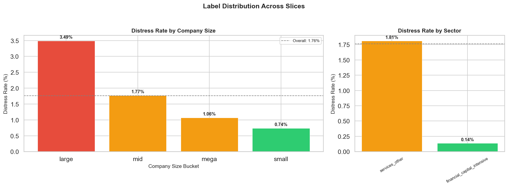
Bar charts showing distress label rate (%) across company size buckets and sector proxies. Color-coded: red >2%, amber >1%, green <1%. Dashed line = overall rate.
Disparate Impact Analysis (80% Rule)
Chart 18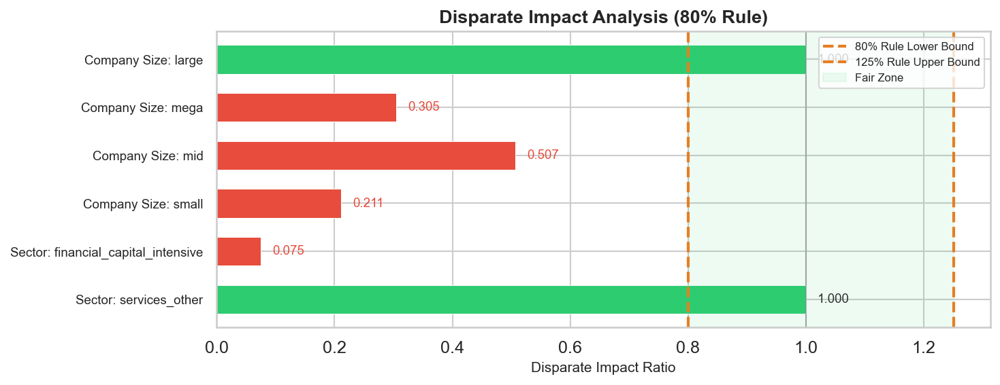
Disparate Impact Ratio (DIR) per slice. Green bars fall within the fair zone (0.8–1.25). Red bars violate the 80% rule, indicating potential unfair bias against that group.